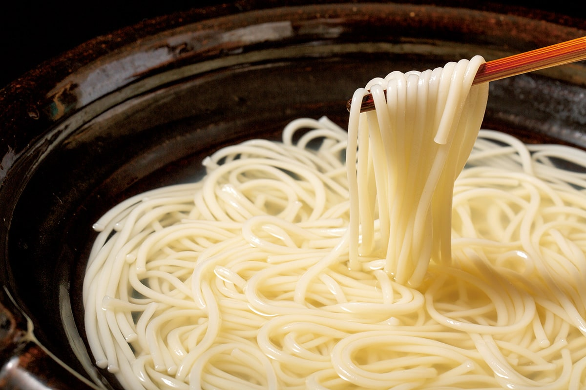
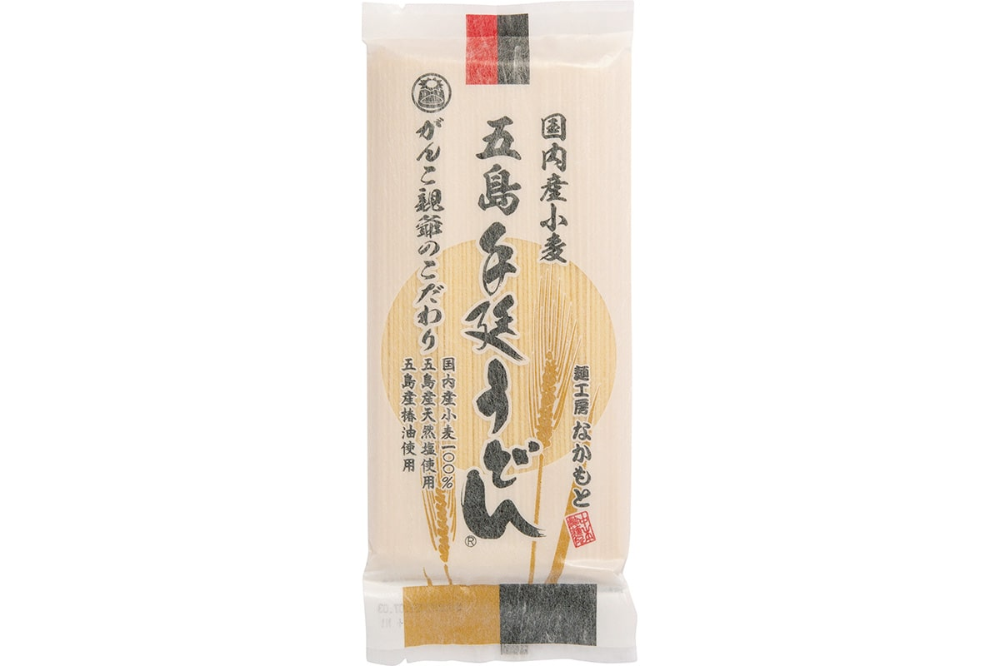
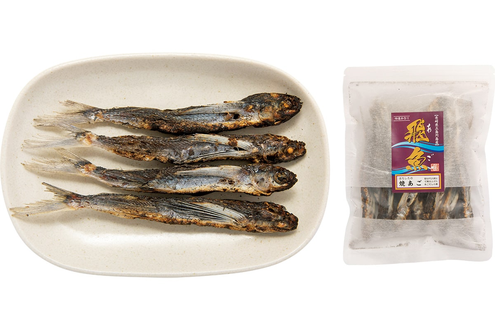

Префектура Нагасаки · Синкамигото · еда
Удон Гото от «Накамото сэймэн»: лапша ручной вытяжки на камелиевом масле

Удон с островов Гото тонкий, круглый в сечении и удивительно упругий. Его тянут вручную по старинному способу, а при вытягивании смазывают маслом камелии, которое делают здесь же, на островах.
Традиция
Лапша, которую тянут руками
Удон Гото часто называют одним из трёх великих удонов Японии, хотя единого списка нет и мнения расходятся. Его история уходит в эпохи Нара и Хэйан (VIII–XII века), когда мимо островов Гото ходили в Китай японские посольства ко двору династии Тан.
Делают его так. Муку замешивают с водой и солью, тесто нарезают спиралью и вытягивают в тонкий жгут. Дав ему отдохнуть, лапшу восьмёркой навивают на две палки, растягивают и оставляют созревать, потом вытягивают ещё длиннее, сушат и только после этого режут.
«Ручная вытяжка требует много времени и сил, и такая лапша есть только в Японии. Удон Гото отличается тем, что при вытягивании его смазывают маслом камелии, главным продуктом островов. Лапша такая упругая, что не теряет упругости даже в „дзигоку-даки“, когда её едят прямо из котла»
Тиэко Мукаса, гастрономический журналист
Производитель
Пшеница, морская соль и камелия
Компания «Накамото сэймэн» работает в городке Синкамигото, на островах Гото к западу от Нагасаки. Свой «Гото тэнобэ удон» она делает из японской пшеницы, соли из морской воды островов и местного камелиевого масла, по традиционной технологии.

Вкус бульона к этой лапше определяет «аго», летучая рыба. На островах удон варят в стиле «дзигоку-даки» и едят прямо из котла, обмакивая в сырое яйцо с бульоном из аго или с соевым соусом.
Для такого бульона подойдёт «яки-аго» марки «Хатасита»: летучую рыбу по старинке жарят на углях и сушат, поэтому вкус у неё насыщенный. Бульон из аго получается чистым и тонким. Кроме целой рыбы есть и порошок для бульона: 60 г стоили 756 иен в 2020 году.

Удон хранится год, в составе только пшеничная мука японского производства, соль и масло камелии. Заказать его можно по телефону, факсу или через сайт, а «яки-аго» только по телефону. Продукцию «Хатасита» продаёт и сама «Накамото сэймэн».
«Накамото сэймэн»
- Адрес
- префектура Нагасаки, уезд Минамимацуура, Синкамигото, Сонэ-го, 1202-1
- Телефон
- +81 959-55-2409, факс +81 959-55-2530
- Часы работы
- заказы принимают по будням 9:00–17:00
- Цены / Вход
- «Гото тэнобэ удон» 250 г, 486 иен; «яки-аго» 100 г, 1080 иен; порошок из аго 60 г, 756 иен
- Сайт
- gotoudon.jp
Фото: Кадзуя Хаяси.